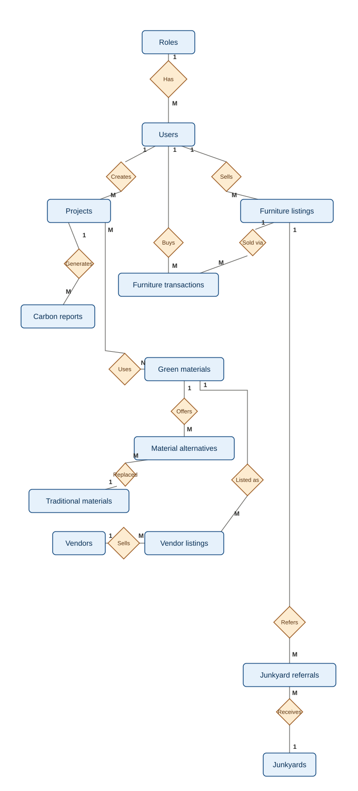
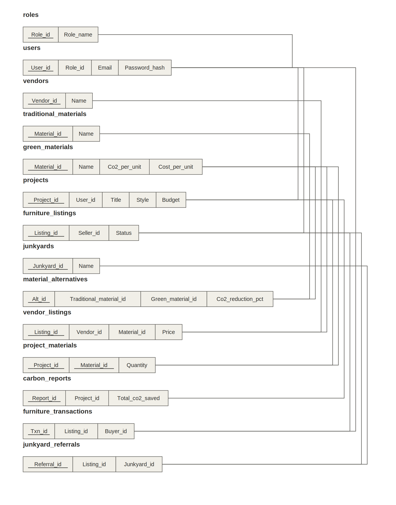
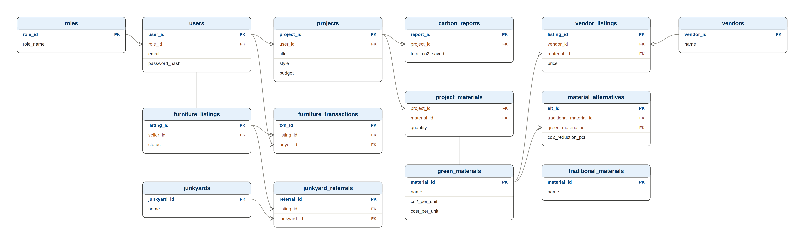
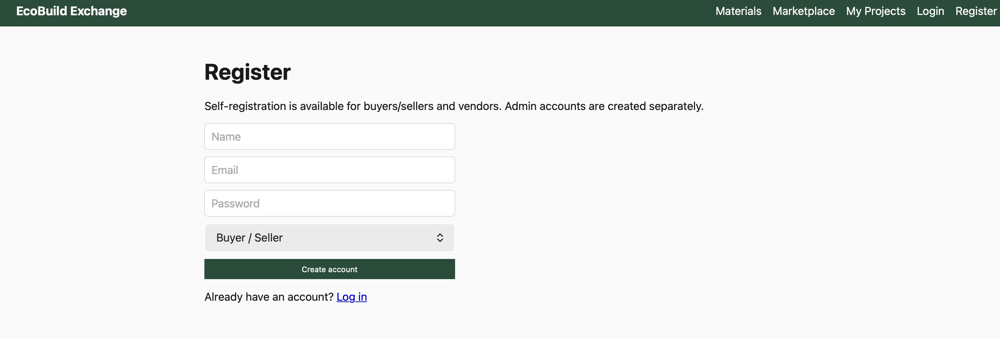
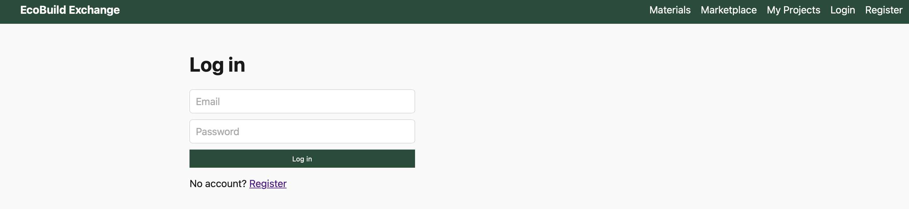
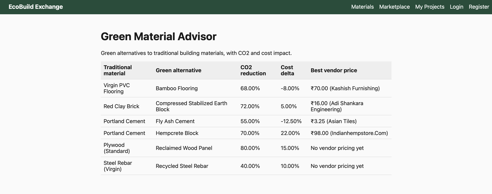
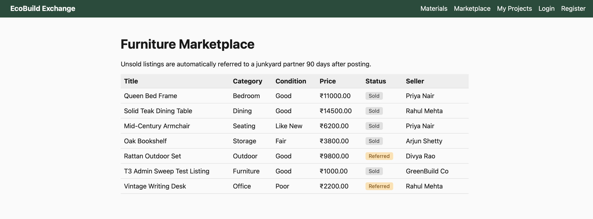

| Team member | SRN |
|---|---|
| Aryan Singh | PES1UG24CS086 |
| Anushka Kishore | PES1UG24CS074 |
Section: ____ Course instructor: ____________
GitHub: https://github.com/codenoww/ecobuild-exchange-dbms-
Buildings account for a large share of global CO2 emissions, much of it embodied in materials such as Portland cement, fired clay brick and virgin steel. People renovating or building usually have no easy way to compare greener alternatives on carbon, cost and local availability. Separately, used furniture is often discarded instead of being resold or recycled.
EcoBuild Exchange addresses both problems:
| ID | Requirement | Role |
|---|---|---|
| FR1 | Register with name, email, password and role (BuyerSeller or Vendor); log in and log out. | All |
| FR2 | Browse traditional materials and their green alternatives with CO2 reduction %, cost delta % and best vendor price; search materials by name or synonym. | All |
| FR3 | View ranked recommendations (best alternative per traditional material). | All |
| FR4 | Create building projects and add green materials with quantities. | BuyerSeller |
| FR5 | Automatically compute each project's CO2 saved and total cost whenever its materials change. | System (trigger) |
| FR6 | Post furniture listings (title, category, condition, price); full-text search listings. | BuyerSeller |
| FR7 | Buy a listing atomically; a listing can never be sold twice. | BuyerSeller |
| FR8 | Vendors manage their own material price listings. | Vendor |
| FR9 | Admin dashboard with system overview; run the 90-day sweep that refers expired listings to a junkyard. | Admin |
| FR10 | Ingest raw vendor and junkyard data into MongoDB, aggregate it, and normalise valid records into PostgreSQL. | System (pipeline) |
Non-functional: passwords stored as bcrypt hashes; DB credentials and JWT secret from environment variables only; role checks enforced on the server; integrity enforced by database constraints, not only by the UI.
The conceptual model (Chen notation) has these main entities: Role, User, Traditional Material, Green Material, Vendor, Project, Carbon Report, Furniture Listing, Furniture Transaction and Junkyard. Key relationships:

The ER model maps to 14 relations. M:N relationships become junction tables (material_alternatives, vendor_listings, project_materials, junkyard_referrals). The schema is in 3NF: every non-key attribute depends only on the key. For example, vendor details live in vendors and are not repeated per listing.


| Data | Database | Why |
|---|---|---|
| Users, roles, projects, materials, alternatives, marketplace listings, transactions, referrals | PostgreSQL | Highly relational data with clear entities and many-to-many links. Needs foreign keys, CHECK constraints and ACID transactions (a purchase must insert a transaction and mark the listing sold together). Triggers and procedures automate the carbon and junkyard rules. Built-in GIN full-text search and window functions serve search and ranking. |
| Raw scraped vendor listings and junkyard contacts | MongoDB | External sources are heterogeneous: some listings have prices and others say "ask for quote", and units, MOQ, pack sizes and tags differ by site. A schemaless document store keeps the raw data unchanged and auditable, and its aggregation pipeline summarises it before cleaning. Only validated, normalised records move into PostgreSQL. |
A vector database was not used. The material data is small and structured, and a synonyms table with full-text search covers search needs.
| Table | Column | Type | Constraints / description |
|---|---|---|---|
| roles | role_id | SERIAL | PK |
| role_name | VARCHAR(30) | NOT NULL, UNIQUE, CHECK IN ('Admin','Vendor','BuyerSeller') | |
| users | user_id | SERIAL | PK |
| role_id | INT | FK → roles, ON DELETE RESTRICT | |
| name | VARCHAR(100) | NOT NULL | |
| VARCHAR(150) | NOT NULL, UNIQUE | ||
| password_hash | VARCHAR(255) | NOT NULL (bcrypt) | |
| created_at | TIMESTAMP | DEFAULT now | |
| traditional_materials | material_id | SERIAL | PK |
| name | VARCHAR(100) | NOT NULL | |
| category | VARCHAR(50) | NOT NULL | |
| co2_per_unit | NUMERIC(10,4) | CHECK ≥ 0 (added by ALTER) | |
| co2_source | TEXT | citation | |
| green_materials | material_id | SERIAL | PK |
| name, category | VARCHAR | NOT NULL | |
| co2_per_unit | NUMERIC(10,4) | NOT NULL, CHECK ≥ 0 (kg CO2e/kg) | |
| cost_per_unit | NUMERIC(10,2) | CHECK ≥ 0 | |
| sustainability_score | NUMERIC(4,2) | CHECK 0–10 | |
| data_quality | VARCHAR(12) | CHECK IN ('cited','derived','placeholder') | |
| co2_source | TEXT | citation | |
| material_alternatives | alt_id | SERIAL | PK |
| traditional_material_id | INT | FK → traditional_materials, CASCADE | |
| green_material_id | INT | FK → green_materials, CASCADE; UNIQUE(traditional, green) | |
| co2_reduction_pct | NUMERIC(5,2) | NOT NULL, CHECK 0–100 | |
| cost_delta_pct | NUMERIC(6,2) | % cost change vs traditional | |
| material_synonyms | synonym_id | SERIAL | PK |
| term | VARCHAR(60) | NOT NULL; index on lower(term); UNIQUE(term, traditional_material_id) | |
| traditional_material_id | INT | FK → traditional_materials, CASCADE | |
| vendors | vendor_id | SERIAL | PK |
| name | VARCHAR(100) | NOT NULL | |
| website, location | VARCHAR | optional | |
| owner_user_id | INT | FK → users, UNIQUE (migration 001) | |
| vendor_listings | listing_id | SERIAL | PK |
| vendor_id | INT | FK → vendors, CASCADE | |
| material_id | INT | FK → green_materials, CASCADE | |
| price | NUMERIC(10,2) | NOT NULL, CHECK ≥ 0 | |
| url, last_synced | VARCHAR / TIMESTAMP | source link; sync time | |
| projects | project_id | SERIAL | PK |
| user_id | INT | FK → users, CASCADE | |
| title | VARCHAR(150) | NOT NULL | |
| style | VARCHAR(80) | optional | |
| budget | NUMERIC(12,2) | CHECK ≥ 0 | |
| project_materials | project_id | INT | PK part, FK → projects |
| material_id | INT | PK part, FK → green_materials | |
| quantity | NUMERIC(10,2) | NOT NULL, CHECK > 0 | |
| carbon_reports | report_id | SERIAL | PK |
| project_id | INT | FK → projects | |
| total_co2_saved, total_cost | NUMERIC(12,2) | written by trigger | |
| furniture_listings | listing_id | SERIAL | PK |
| seller_id | INT | FK → users | |
| title, category | VARCHAR | NOT NULL; GIN full-text index | |
| condition | VARCHAR(30) | CHECK IN ('New','Like New','Good','Fair','Poor') | |
| price | NUMERIC(10,2) | NOT NULL, CHECK ≥ 0 | |
| status, posted_at | VARCHAR(20) / TIMESTAMP | CHECK IN ('Active','Sold','Expired','Referred'); indexed | |
| furniture_transactions | txn_id | SERIAL | PK |
| listing_id, buyer_id, price, txn_date | INT, INT, NUMERIC, TIMESTAMP | FKs → furniture_listings, users; price ≥ 0 | |
| junkyards | junkyard_id | SERIAL | PK |
| name, location, accepted_categories, contact | VARCHAR | name NOT NULL | |
| junkyard_referrals | referral_id, listing_id, junkyard_id, referred_at | SERIAL, INT, INT, TIMESTAMP | PK; FKs → furniture_listings, junkyards |
CREATE TABLE furniture_listings (
listing_id SERIAL PRIMARY KEY,
seller_id INT NOT NULL REFERENCES users(user_id) ON DELETE CASCADE,
title VARCHAR(150) NOT NULL,
category VARCHAR(60) NOT NULL,
condition VARCHAR(30) NOT NULL CHECK (condition IN ('New','Like New','Good','Fair','Poor')),
price NUMERIC(10,2) NOT NULL CHECK (price >= 0),
status VARCHAR(20) NOT NULL DEFAULT 'Active'
CHECK (status IN ('Active','Sold','Expired','Referred')),
posted_at TIMESTAMP NOT NULL DEFAULT CURRENT_TIMESTAMP
);
CREATE TABLE project_materials (
project_id INT NOT NULL REFERENCES projects(project_id) ON DELETE CASCADE,
material_id INT NOT NULL REFERENCES green_materials(material_id) ON DELETE CASCADE,
quantity NUMERIC(10,2) NOT NULL CHECK (quantity > 0),
PRIMARY KEY (project_id, material_id)
);
CREATE INDEX idx_users_role ON users(role_id);
CREATE INDEX idx_vendor_listings_mat ON vendor_listings(material_id);
CREATE INDEX idx_project_materials_mat ON project_materials(material_id);
CREATE INDEX idx_furniture_status ON furniture_listings(status);
CREATE INDEX idx_furniture_posted_at ON furniture_listings(posted_at);
CREATE INDEX idx_furniture_search ON furniture_listings
USING GIN (to_tsvector('english', title || ' ' || category));
CREATE UNIQUE INDEX idx_vendors_owner_user_id_unique ON vendors(owner_user_id);
CREATE VIEW vendor_price_comparison AS SELECT gm.material_id, gm.name AS material_name, v.name AS vendor_name, vl.price, vl.url, vl.last_synced FROM vendor_listings vl JOIN green_materials gm ON gm.material_id = vl.material_id JOIN vendors v ON v.vendor_id = vl.vendor_id ORDER BY gm.material_id, vl.price ASC; CREATE VIEW listings_nearing_expiry AS SELECT listing_id, title, seller_id, posted_at, (posted_at + INTERVAL '90 days') AS expires_on, status FROM furniture_listings WHERE status = 'Active' AND posted_at + INTERVAL '90 days' <= CURRENT_TIMESTAMP + INTERVAL '7 days';
ALTER TABLE furniture_listings ADD COLUMN view_count INT NOT NULL DEFAULT 0;
ALTER TABLE vendors ALTER COLUMN location TYPE VARCHAR(200);
ALTER TABLE furniture_listings ADD CONSTRAINT chk_view_count_nonneg CHECK (view_count >= 0);
ALTER TABLE vendor_listings DROP COLUMN IF EXISTS is_live_synced;
ALTER TABLE green_materials ALTER COLUMN co2_per_unit TYPE NUMERIC(10,4);
ALTER TABLE green_materials ADD COLUMN IF NOT EXISTS data_quality VARCHAR(12) NOT NULL DEFAULT 'placeholder'
CHECK (data_quality IN ('cited','derived','placeholder'));
ALTER TABLE vendors ADD COLUMN IF NOT EXISTS owner_user_id INT REFERENCES users(user_id);
CREATE TABLE legacy_material_mapping (old_name VARCHAR(100), new_material_id INT);
DROP TABLE IF EXISTS legacy_material_mapping;
INSERT INTO projects (user_id, title, style, budget) VALUES ((SELECT user_id FROM users WHERE email = 'kavya.iyer@mail.com'), 'Rooftop Pergola', 'Modern', 150000.00) RETURNING project_id, title; UPDATE vendor_listings SET price = 7.00, last_synced = CURRENT_TIMESTAMP WHERE vendor_id = (SELECT vendor_id FROM vendors WHERE name = 'Verma Construction Company') AND material_id = 1; DELETE FROM vendor_listings WHERE vendor_id = (SELECT vendor_id FROM vendors WHERE name = 'Laxmi Bricks Co.') AND material_id = 1;
Database: ecobuild_exchange. Collections: raw_vendor_listings (99 documents scraped from IndiaMART and TradeIndia) and raw_junkyard_listings (4 scrap and furniture buyers).
{
"source_site": "tradeindia.com",
"source_url": "https://www.tradeindia.com/products/...-fly-ash-brick-8407590.html",
"product_name": "9x4x3 Inch Rectangular Solid Fly Ash Brick",
"price": 10, "currency": "INR", "unit": "Piece", "moq": 2500,
"seller_name": "Verma Construction Company", "seller_location": "Panipat, Haryana",
"scraped_at": "2026-10-23T18:35:00Z",
"raw_tags": ["fly ash brick", "construction material"]
}
Fields are optional by design. price may be null ("ask for quote"), and price_note, moq and pack_size appear only on some sources.
raw_collection.create_index("source_site")
raw_collection.create_index("seller_name")
pipeline = [
{"$group": {"_id": "$source_site",
"total_listings": {"$sum": 1},
"priced_listings": {"$sum": {"$cond": [{"$ne": ["$price", None]}, 1, 0]}},
"avg_price": {"$avg": "$price"}}},
{"$sort": {"total_listings": -1}}
]
| Source | Total | Priced | Avg price (INR) |
|---|---|---|---|
| IndiaMART | 96 | 92 | 178.23 |
| TradeIndia | 3 | 3 | 18,697.33 |
product_name to a canonical green material by keyword (e.g. "fly ash", "cseb", "bamboo", "hempcrete"). Reject excluded terms such as "machine" and "service".vendors and vendor_listings (real_vendor_data.sql). Keep only Bengaluru junkyards (service area).Result: 99 raw documents → 85 matched vendor listings in PostgreSQL. 4 junkyards → 2 retained.
| # | Feature | Object | Purpose |
|---|---|---|---|
| 1 | Views | vendor_price_comparison, listings_nearing_expiry, material_recommendations | Reusable price comparison, expiry warnings, ranking |
| 2 | Indexing / Full-text search | idx_furniture_search (GIN on tsvector) | Fast keyword search of furniture listings |
| 3 | Stored function | fn_calculate_carbon_savings(project_id) | Computes CO2 saved and cost; writes a carbon report |
| 4 | Triggers | trg_recalc_carbon, trg_enforce_referral | Keep carbon reports in sync; guarantee every 'Referred' listing has a referral row |
| 5 | Stored procedure | sp_refer_expired_listings() | 90-day batch sweep to junkyards |
| 6 | Transactions | sp_purchase_listing (SELECT … FOR UPDATE) | Atomic, race-free purchase |
| 7 | Window function | RANK() OVER (PARTITION BY …) | Rank green alternatives per traditional material |
| 8 | NoSQL aggregation | MongoDB $group/$sum/$avg/$sort | Summarise raw vendor data before normalisation |
CREATE OR REPLACE FUNCTION fn_calculate_carbon_savings(p_project_id INT)
RETURNS TABLE(co2_saved NUMERIC, cost NUMERIC) AS $$
DECLARE v_co2_saved NUMERIC(12,2) := 0; v_total_cost NUMERIC(12,2) := 0;
BEGIN
SELECT COALESCE(SUM(pm.quantity * (CASE WHEN ma.co2_reduction_pct < 100
THEN (gm.co2_per_unit / (1 - ma.co2_reduction_pct/100.0)) - gm.co2_per_unit ELSE 0 END)), 0),
COALESCE(SUM(pm.quantity * gm.cost_per_unit), 0)
INTO v_co2_saved, v_total_cost
FROM project_materials pm
JOIN green_materials gm ON gm.material_id = pm.material_id
LEFT JOIN material_alternatives ma ON ma.green_material_id = gm.material_id
WHERE pm.project_id = p_project_id;
INSERT INTO carbon_reports (project_id, total_co2_saved, total_cost) VALUES (p_project_id, v_co2_saved, v_total_cost);
RETURN QUERY SELECT v_co2_saved, v_total_cost;
END; $$ LANGUAGE plpgsql;
CREATE TRIGGER trg_recalc_carbon
AFTER INSERT OR UPDATE OR DELETE ON project_materials
FOR EACH ROW EXECUTE FUNCTION trg_fn_recalc_carbon();
CREATE TRIGGER trg_enforce_referral AFTER UPDATE OF status ON furniture_listings FOR EACH ROW EXECUTE FUNCTION trg_fn_enforce_referral(); -- if NEW.status = 'Referred' and no junkyard_referrals row exists, insert one
CREATE OR REPLACE PROCEDURE sp_purchase_listing(p_listing_id INT, p_buyer_id INT, p_price NUMERIC) LANGUAGE plpgsql AS $$ DECLARE v_status VARCHAR(20); BEGIN SELECT status INTO v_status FROM furniture_listings WHERE listing_id = p_listing_id FOR UPDATE; IF v_status IS NULL THEN RAISE EXCEPTION 'Listing % does not exist', p_listing_id; ELSIF v_status <> 'Active' THEN RAISE EXCEPTION 'Listing % is not available (status: %)', p_listing_id, v_status; END IF; INSERT INTO furniture_transactions (listing_id, buyer_id, price) VALUES (p_listing_id, p_buyer_id, p_price); UPDATE furniture_listings SET status = 'Sold' WHERE listing_id = p_listing_id; END; $$;
CREATE OR REPLACE PROCEDURE sp_refer_expired_listings() LANGUAGE plpgsql AS $$
DECLARE rec RECORD; v_junkyard_id INT;
BEGIN
FOR rec IN SELECT listing_id FROM furniture_listings
WHERE status = 'Active' AND posted_at + INTERVAL '90 days' <= CURRENT_TIMESTAMP LOOP
SELECT junkyard_id INTO v_junkyard_id FROM junkyards ORDER BY junkyard_id LIMIT 1;
INSERT INTO junkyard_referrals (listing_id, junkyard_id) VALUES (rec.listing_id, v_junkyard_id);
UPDATE furniture_listings SET status = 'Referred' WHERE listing_id = rec.listing_id;
END LOOP;
END; $$;
CREATE OR REPLACE VIEW material_recommendations AS
SELECT tm.name AS traditional_material, gm.name AS green_material,
ROUND(0.5*ma.co2_reduction_pct + 0.3*gm.sustainability_score*10 - 0.2*COALESCE(ma.cost_delta_pct,0), 2) AS score,
RANK() OVER (PARTITION BY tm.material_id
ORDER BY 0.5*ma.co2_reduction_pct + 0.3*gm.sustainability_score*10
- 0.2*COALESCE(ma.cost_delta_pct,0) DESC) AS rank_within_material
FROM material_alternatives ma
JOIN traditional_materials tm ON tm.material_id = ma.traditional_material_id
JOIN green_materials gm ON gm.material_id = ma.green_material_id;
SELECT tm.name AS traditional_material, gm.name AS green_alternative,
ma.co2_reduction_pct, ma.cost_delta_pct, gm.sustainability_score
FROM material_alternatives ma
JOIN traditional_materials tm ON tm.material_id = ma.traditional_material_id
JOIN green_materials gm ON gm.material_id = ma.green_material_id
ORDER BY ma.co2_reduction_pct DESC;
SELECT p.title, u.name AS owner, SUM(pm.quantity) AS total_material_units,
COUNT(DISTINCT pm.material_id) AS distinct_materials_used
FROM projects p JOIN users u ON u.user_id = p.user_id
JOIN project_materials pm ON pm.project_id = p.project_id
GROUP BY p.project_id, p.title, u.name ORDER BY total_material_units DESC;
SELECT u.name, COUNT(*) AS active_listings FROM furniture_listings fl JOIN users u ON u.user_id = fl.seller_id WHERE fl.status = 'Active' GROUP BY u.user_id, u.name HAVING COUNT(*) > 1 ORDER BY active_listings DESC;
SELECT gm.name, ROUND(AVG(vl.price),2) AS avg_price, COUNT(vl.listing_id) AS vendor_count,
MIN(vl.price) AS lowest_price, MAX(vl.price) AS highest_price
FROM green_materials gm LEFT JOIN vendor_listings vl ON vl.material_id = gm.material_id
GROUP BY gm.material_id, gm.name ORDER BY avg_price DESC NULLS LAST;
SELECT p.title, cr.total_co2_saved FROM projects p JOIN carbon_reports cr ON cr.project_id = p.project_id WHERE cr.total_co2_saved > (SELECT AVG(total_co2_saved) FROM carbon_reports) ORDER BY cr.total_co2_saved DESC;
SELECT listing_id, title, posted_at, status FROM furniture_listings WHERE listing_id NOT IN (SELECT listing_id FROM furniture_transactions) ORDER BY posted_at ASC;
SELECT fl.listing_id, fl.title, fl.category, fl.condition, fl.price, fl.status, u.name AS seller_name,
(fl.posted_at + INTERVAL '90 days') AS expires_on
FROM furniture_listings fl JOIN users u ON u.user_id = fl.seller_id
WHERE ($1 = '' OR to_tsvector('english', fl.title || ' ' || fl.category) @@ plainto_tsquery('english', $1))
ORDER BY (fl.status = 'Active') DESC, fl.posted_at DESC;
SELECT traditional_material, green_material, score FROM material_recommendations WHERE rank_within_material = 1;
status, condition, role_name and data_quality.project_materials, UNIQUE email and UNIQUE (traditional, green) pair.users.role_id so a role in use can't be deleted.trg_enforce_referral prevents a 'Referred' listing without a referral record. sp_purchase_listing locks the row and rejects non-Active listings, so double-selling is impossible. trg_recalc_carbon keeps derived totals consistent.$1, $2) prevent SQL injection. API routes validate required fields and return 400, 401 or 403.
┌──────────────────────────── Browser ─────────────────────────────┐
│ Next.js pages: /materials /marketplace /projects /vendor /admin │
│ /login /register │
└───────────────────────────────┬──────────────────────────────────┘
│ fetch (JSON, httpOnly JWT cookie)
┌───────────────────────────────▼──────────────────────────────────┐
│ Next.js Route Handlers (app/api/*) │
│ auth: register/login/logout/session lib/auth.js (bcrypt, JWT, │
│ materials, furniture(+buy), projects, requireRole) │
│ vendor/listings, admin/overview+sweep lib/db.js (pg Pool, │
│ DATABASE_URL env) │
└───────────────────────────────┬──────────────────────────────────┘
│ SQL (parameterised), CALL procedures
┌───────────────────────────────▼──────────────────────────────────┐
│ PostgreSQL 16: 14 tables, views, GIN index, function, triggers, │
│ procedures, ranking view │
└───────────────────────────────▲──────────────────────────────────┘
│ real_vendor_data.sql (normalised)
┌───────────────────────────────┴──────────────────────────────────┐
│ vendor_sync.py: load → aggregate → match → normalise → emit SQL │
└───────────────────────────────▲──────────────────────────────────┘
│
┌───────────────────────────────┴──────────────────────────────────┐
│ MongoDB: raw_vendor_listings, raw_junkyard_listings │
│ ← JSON scraped from IndiaMART / TradeIndia / business listings │
└──────────────────────────────────────────────────────────────────┘
Credentials (DATABASE_URL, JWT_SECRET, MONGO_URI) are read only from environment variables. .env.example documents them, and real .env files are git-ignored.
requireRole("Admin") guards /api/admin/*. Vendor routes check role === "Vendor". Project, buy and listing routes require a valid session (401 otherwise, 403 for the wrong role).



| # | Test | Expected | Actual | Result |
|---|---|---|---|---|
| T1 | GET /api/admin/overview without session | 401 | 401 returned | Pass |
| T2 | POST /api/admin/sweep without session | 401 | 401 returned | Pass |
| T3 | Register twice with same email | 409 | 409 Conflict, duplicate-email message | Pass |
| T4 | Login with wrong password | 401 | 401, "Invalid credentials" | Pass |
| T5 | Admin API with BuyerSeller session | 403 | 403 Forbidden | Pass |
| T6 | Buy listing 8 twice | 2nd purchase rejected | 400: "Listing 8 is not available (status: Sold)" | Pass |
| T7 | Add 10 units CSEB to a project | Trigger recalculates carbon report | total_co2_saved = 2.06, total_cost = 55.00 | Pass |
| T8 | npm run build (projects feature) | Build succeeds | Build succeeded | Pass |
| T9 | npm run build (furniture search) | Build succeeds | Build succeeded | Pass |
| T10 | Admin 90-day sweep on listing older than 90 days | Listing → Referred | Not run | Not run |
| T11 | Sync excludes earth-block machine listings | Excluded | Not run | Not run |
| T12 | Sync excludes plain TMT rebar | Excluded | Not run | Not run |
Source: docs/testing_log.md. T10–T12 should be run and updated before the demo.
| Member | Database work | Application work |
|---|---|---|
| Aryan Singh (PES1UG24CS086) | ____________________ | ____________________ |
| Anushka Kishore (PES1UG24CS074) | ____________________ | ____________________ |
EcoBuild Exchange goes beyond CRUD by putting the project's core logic in the database. Triggers keep carbon reports consistent, a locked transaction prevents double sales, a stored procedure automates the 90-day circular-economy rule, and a window-function view ranks green alternatives. PostgreSQL handles the structured, relational and transactional data. MongoDB holds heterogeneous scraped supplier data whose structure varies by source, and its aggregation pipeline feeds a cleaning step into SQL. The Next.js application uses all of this through an authenticated, role-checked API layer with no hard-coded credentials.
Limitations and future work: scheduled live scraping instead of seed snapshots; more cited CO2 values (some are still placeholders); pg_cron for the 90-day sweep; nearest-junkyard matching by location and category; and semantic (vector) search over material descriptions.